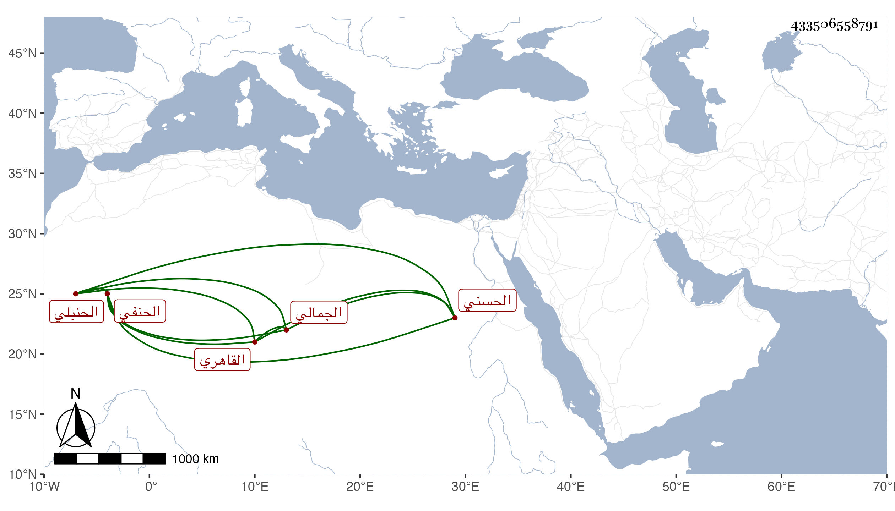

0902Sakhawi.DawLamic.ITO20230111-ara1.EIS1600.433506558791
Biography ID: 433506558791
35
محمد بن محمد بن محمد المحب بن الشمس القاهري الحنبلي ويعرف بابن الجليس شريف بن عبد الله الجمالي وهو ابن أخت الشريف المحب محمد بن عبد الرحمن الحسني الحنفي شيخ الجوهرية والماضي . نشأ فحفظ القرآن ومختصر الخرقي ولازم دروس المحب بن نصر الله بل قرأ عليه وكذا قرأ على العز الكناني قبل ولايته في الفقه وهو الذي استنابه وعلى البوتيجي البخاري وسمعه أو معظمه على البرهان الصالحي ثم سمع ومعه ابنه محمد على أم هانئ الهورينية وغيرها . وتنزل في الجهات وحرك الخطيب ابن أبي عمر حتى كاد أمره أن يتم بعزل شيخه العز الكناني فما أسعدا وحج وكان جامدا . مات في جمادى الولى سنة أربع وتسعين عن بضع وسبعين عفا الله عنه ، وخلف ابنة تحت أبي البركات الصالحي .
